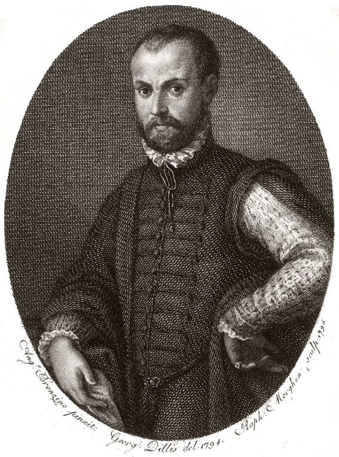

Никколо Макиавелли
3 мая 1469 — 21 июня 1527

Детство и юность
Макиавелли Никколоди Бернардо - итальянский политический мыслитель, общественный деятель и писатель, родился в деревне Сан-Кашано рядом с городом Флоренция 3 мая 1465 года. Происходил из обедневшей дворянской семьи нотариуса. Родители Макиавелли были образованными людьми. Его отец - Бернардо Макиавелли поддерживал дружеские связи с известными книгопродавцами. В их числе был и Джунта, потомок которого позднее стал первым издателем книг Никколо.Мать Никколо – донна Бартеломеаписала поэмы и гимны, распевала их в церкви Санта-Тринита.Заработка Бернардо едва хватало на нужды семьи, поэтому он строго следил за семейным бюджетом. 6 мая 1476 года Никколо поступил в школу магистра Маттео и стал обучаться грамматике. Через год, он был отдан в городскую школу, где изучали латинских классиков.Образование Макиавелли, как об этом свидетельствует его переписка, дополнялось знакомством с музыкой, которую он любил. С юных лет он стал интересоваться политикой и политической жизнью. В молодости он не только внимательно прочитал, но и собственноручно переписал труд античного материализма - поэму Лукреция "О природе вещей". Вскоре он приохотился к чтению древних писателей и историков, а также великих творцов новой итальянской культуры - среди них Данте, Петрарка, Боккаччо. Благодаря усилиям родителей и влиянию культурной среды, а также его собственной настойчивости он был подготовлен к деловой карьере.
Философия Никколо Макиавелли
Государство в философии макиавелли
Исторически Макиавелли принято изображать тонким циником, считающим, что в основе политического поведения лежат выгода и сила, и что в политике следует опираться на силу, а не на мораль, которой можно и пренебречь при наличии благой цели. В работах «Государь» и «Рассуждения на первую декаду Тита Ливия» Макиавелли рассматривает государство как политическое состояние общества: отношение властвующих и подвластных, наличие соответствующим образом устроенной, организованной политической власти, учреждений, законов. В основе всех работ Макиавелли, в том числе и «Государя» - мечта о сильном государстве, не обязательно республиканском, но опирающемся на поддержку народа и способном оказать сопротивление иноземному вторжению. Макиавелли часто обвиняют в том, что он проповедовал в своих произведениях тиранию и деспотизм. Было признано, что «Государь» - это кодекс тирании, основанный на зловещем принципе «цель оправдывает средства», «победителей не судят». И назвали эту доктрину макиавеллизмом. В действительности же указанный трактат - далеко не единственная книга философа. В созданных чуть позже «Рассуждениях о первой декаде Тита Ливия» нет и намека на симпатии Макиавелли к тиранам и деспотам - напротив, превознесение республиканского строя. Идеалом же в этом отношении Макиавелли представлял Римскую республику. Рассуждая о формах правления, мыслитель отмечет, что имеется шесть форм правления - три очень скверных и три сами по себе хороших, но легко искажаемых и становящихся вследствие этого пагубными. Хорошие формы правления - самодержавие, аристократия и народное правление; дурные же - три остальных, от трех первых зависящие и настолько с ними родственные, что они легко переходят друг в друга: самодержавие легко становится тираническим, аристократии с легкостью делаются олигархиями, Народное правление без труда превращается в разнузданность.
Таким образом, Макиавелли указывает на относительность, на то, что, в зависимости от ситуации, политическое правление легко может сменять друг друга. При этом чаще происходит регресс, чем прогресс. Залог благополучия в государстве Макиавелли видит в постоянстве законов. Подлинно счастливой он называет ту республику, где появляется человек столь мудрый, что даваемые им законы обладают такой упорядоченностью, что, подчиняясь им, республика может, не испытывая необходимости в их изменении, жить спокойно и безопасно. Именно такими, с точки зрения Макиавелли, были Спартанская и Римская республики. Идеи, проповедуемые в «Государе» нельзя рассматривать в отрыве от действительности, в условиях которой жил автор. По мысли Макиавелли, диктатура одного правителя - это наиболее подходящая форма правления на время кризиса в государстве. При этом, она должна заканчиваться вместе с кризисом. Итак, «цель», оправдывающая, по Макиавелли, любые средства, есть «общее благо» - это национальное государство, отвечающее широко понимаемым общественным интересам. Ранее уже говорилось о том, что политика мыслилась у Макиавелли обособленно от морали и религии. Теперь следует указать, что государство было для мыслителя тем абсолютом, интересам которого подчинялось все. Если вспомнить о времени, когда жил и творил Макиавелли, то нетрудно представить, как жаждал он увидеть свою Флоренцию и Италию вообще свободным от «варваров» самостоятельным государством, а спасение он видел только в сильной центральной власти.
Образ идеального государя
В своем произведении, вызвавшем массу споров, Макиавелли не идет на поводу у тех, кто предлагал умилительный идеал государя, обладающего лишь превосходными положительными качествами. Он рисует картину качеств реалистических, которыми обладали и обладают реальные правители и дает совет - каким нужно быть новому государю в реальной жизни. Макиавелли один из немногих деятелей эпохи Возрождения, кто в своих работах затронул вопрос о роли личности правителя. Он считал, исходя из реалий современной ему Италии, страдавшей от феодальной раздробленности, что лучше сильный, пусть и лишенный угрызения совести, государь во главе единой страны, чем соперничающие удельные правители. Таким образом, Макиавелли поставил в философии и истории вопрос о соотношении моральных норм и политической целесообразности Новый Государь Никколо Макиавелли - это не просто человек, обладающий набором качеств и свойств, не просто идеальный образ. Макиавелли основательно, тщательно, бережно и продуманно выстраивает зримый, живой и притягательный образ Нового Государя. Макиавелли обстоятельно рассматривает такие категории и понятия, как щедрость и бережливость, жестокость и милосердие, любовь и ненависть. Рассматривая щедрость и бережливость, Макиавелли замечает, что те государи, которые стремились быть щедрыми, за короткое время тратили все свои богатства. После истощения казны они были вынуждены поднимать уже существующие и устанавливать новые налоги, что вело к ненависти подданных. Поэтому Макиавелли советует государю не бояться прослыть скупым. Но тут же автор рассматривает некоторые возможные ситуации, когда подобный совет будет не полезен, а вреден. Ведя речь о таких качествах, как жестокость и милосердие, Макиавелли сразу же пишет, что каждый государь желал бы прослыть милосердным, а не жестоким. Другое дело, что часто, для удержания власти, правителю приходится проявлять жестокость. Если стране грозит беспорядок, то государь просто обязан не допустить этого, даже если придется учинить несколько расправ. Зато по отношению к многочисленным подданным эти казни станут актом милосердия, поскольку беспорядок принес бы горе и страдания именно им. Именно из-за этой части произведения Макиавелли обвинили в призыве к жестокости и в неразборчивости в выборе средств.
«Государь» является трактатом о роли, месте и значении главы государства, а его объявили пособием для абсолютных монархов и диктаторов. Но Макиавелли был не пропагандистом жестокости и лицемерия, а исследователем методов и сущности единовластия. К тому же обвинители «не замечали» в той же главе такие слова автора: «Однако новый государь не должен быть легковерен, мнителен и скор на расправу, во всех своих действиях он должен быть сдержан, осмотрителен и милостив». Применение жестоких мер Макиавелли оправдывал лишь при неизбежных обстоятельствах. При этом, как истинный идеолог буржуазии, Макиавелли объявляет неприкосновенность частной собственности, жилища и семьи граждан. Все остальное зависит от самого государя, которому Макиавелли советует опираться только на то, что зависит то него самого. Много внимания уделяет Макиавелли отношениями нового государя с народом. Прежде всего, он предупреждает, чтобы правитель не совершал поступков, которые могли бы вызвать ненависть или презрение подданных. Макиавелли четко делит подданных государя на знать и народ. Он считает достижение равновесия между этими группами одной из важнейших задач мудрого правителя. Причем небезосновательно считает, что народ гораздо большая сила, чем знатные подданные. Макиавелли учил не только устанавливать власть, но и придавал большое значение тому, как эту власть сохранить. Советы автор дает не отвлеченные, а подтвержденные реальными историческими событиями. В вопросе сохранения власти после ее завоевания Макиавелли рассматривает большое количество подходящих способов: выбор друзей и советников, постройка или, наоборот, разрушение крепостей, содержание армии и т.д. Почитание и уважение государя подданными - одно из главных условий сохранения им власти в стране. Макиавелли рисует многосторонний облик нового государя. Не обходит автор стороной и такой важный вопрос, как советники правителя -- его ближайшее окружение. Хороши они или плохи, «зависит от благоразумия государей». Именно то, каких людей правитель приближает к своей особе, говорит о его мудрости. Макиавелли считает, что первая ошибка или, наоборот, первая удача правителя, это выбор советников. Выбрав хороших советников, государь должен стараться удержать их преданность с помощью богатства и почестей. В одной из глав своего произведения Макиавелли пытается предостеречь государя от льстецов. Уберечься от них, не попасть под их влияние, не потеряв почтения, не так просто, как кажется. Макиавелли опровергает и распространенное мнение, что мудрость государя во многом зависит от добрых советов. Это не так, наоборот, «государю, который сам не обладает мудростью, бесполезно давать благие советы». Наделяя нового государя неограниченной властью, Макиавелли, в строгом соответствии с этим, возлагает на него всю ответственность за состояние государства, за сохранение и укрепление власти. Государь должен рассчитывать прежде всего на свое умение управлять государством и на созданное войско, а не на судьбу. Хотя Макиавелли и признает, что судьба «повинна» в половине происходящих событий, однако вторую половину он отдает в руки человека. Политика, согласно убеждениям Макиавелли, есть символ веры человека, и поэтому она должна занимать господствующее положение в мировоззрении. Исходя из требований своего времени, Макиавелли формулирует важную историческую задачу -- создание единого унитарного итальянского государства. По ходу мысли Макиавелли приходит к выводу, что вести народ к построению нового государства может лишь государь. Не конкретно-историческая личность, а нечто отвлеченное, символическое, обладающее такими качествами, которые в совокупности своей недоступны никакому живому правителю. Именно поэтому Макиавелли большую часть своего исследования посвящает вопросу: каким должен быть государь, чтобы выполнить историческую задачу -- построение нового государства. Исследование построено строго логически, объективно. Макиавелли исходит из реального жизненного опыта и пытается возводить свои теоретические построения на фундаменте этого опыта. «Государь» является живой картиной того времени. Произведение Макиавелли -- это выражение личности, которая хочет вмешаться в политику и историю своей страны.
Нравственное и моральное содержание трактата
Макиавелли приписывают формулу «цель оправдывает средства», в которую он отнюдь не вкладывал того расширительного смысла, который созрел в ХХ в. Макиавелли в своем «Государе» писал, что великие дела удавались лишь тем, кто не старался сдержать данное слово и умел, кого нужно, обвести вокруг пальца. Он объясняет это тем, что политическая ситуация может меняться и нужно использовать в каждый данный момент те методы и приемы, которые пригодны именно сейчас. Если же сковать себя твердыми обещаниями, это приведет к поражению.
Трудно не согласиться с подобными выводами выдающегося мыслителя. Политика, к сожалению, дело далеко не чистое. Однако вины Макиавелли в этом нет. В то же время определенная доля аморальности, свойственная государю, вовсе не подразумевает под собой права на террор ради «светлого будущего». Не сдержать данное слово и истреблять по идейным соображениям своих подданных - вещи совершенно разные. Таким образом, у Макиавелли речь идет вовсе не о беспринципном тиране, каковым иногда мыслят «государя», а о мудром политике, которому ничто человеческое не чуждо. При этом высшей целью, оправдывающей далеко не любые средства для властелина должен быть государственный интерес - порядок и спокойствие в стране. Макиавелли дает своему «государю» целый ряд советов по поводу нравственного поведения. Вот один из них: «…надо являться в глазах людей сострадательным, верным слову, милостивым, искренним, благочестивым - и быть таковым на самом деле, но внутренне надо сохранять готовность проявить и противоположные качества, если это окажется необходимо». Само возникновение человеческого общества, государства, морали объясняется в политической философии Макиавелли естественным ходом исторического развития. Из общественной жизни людей, из необходимости самозащиты от враждебных сил природы и друг от друга выводит Макиавелли не только власть, но и мораль, причем само понятие добра определяется гуманистическим критерием «пользы». В целом, можно добавить, что мораль рассматривается у Макиавелли как средство, всегда подчиненное целям политики. Обращаясь к нравственности, следует отметить, что Макиавелли очень тесно увязывал ее с законом. «Возьмем, - писал он, - город совершенно развращенный… в нем не существует ни законов, ни порядков, способных обуздать всеобщую испорченность. Ибо как добрые нравы, для того чтобы сохраниться, нуждаются в законах, точно так же и законы, для того чтобы они соблюдались, нуждаются в добрых нравах». Это значит, что никакие законы не обретут полной силы, пока граждане не осознают, насколько важно для государства их благонравное поведение.
Интересным представляется тот факт, что на основании неверно истолкованных произведений Макиавелли, его неверно понятых идей, родилось в философии и политической науке понятие «макиавеллизм». Таким образом, Макиавелли, если можно так выразиться, стал жертвой обстоятельств. Просто, у политиков, трактовавших его идеи в разное время, всегда было свое представление о морали, нравственности, целях и средствах.
Личная жизнь
Зимой 1501 года действующий дипломат Макиавелли приехал во Флоренцию с очередной государственной миссией. Там и выбрал в жены Мариетту Ди Луиджи Корсини, девушку из небогатой семьи. Этот брак был взаимовыгодным, направленным, прежде всего, на улучшение благосостояния двух семей. Однако отношения у супругов складывались теплые. Мариетта родила ему пять детей. Однако это не мешало политику в заграничных поездках заводить многочисленные романтические связи с другими женщинами.
Смерть
Никколо Макиавелли посвятил жизнь карьере и политике, грезил о процветании Флоренции. Однако ни одно из ожиданий не оправдалось. В 1527 году испанцы разграбили Рим, а сменившаяся власть больше не нуждалась в Макиавелли. Эти события пошатнули здоровье мыслителя. В июне 1527 года Никколо умер. Смерть наступила в Сан-Кашано (поблизости от Флоренции). Где находится захоронение итальянца, никто точно сказать не может. Однако во Флоренции, в церкви «Святого креста», есть надгробие в память о Макиавелли.
Основные труды
Жизнь и творчество Никколо Макиавелли пришлись на неспокойную эпоху Возрождения: Папа Римский имел возможность владеть армией, а у власти итальянских городов пребывали иностранные государства (Франция, Испания, Священная Римская империя). Часто сменялись союзы, наемники переходили на сторону врага, а власть менялась раз в несколько недель, пал Рим. В эпоху Возрождения, во времена научных открытий набирает обороты развитие натурфилософии. Средневековые взгляды и идеи уходят на второй план, уступая место новым учениям. Велико влияние теорий Леонардо да Винчи, Коперника и Кузанского. Теперь Бог отождествлен с природой. Политические перевороты и научные достижения не могли не сказаться на произведениях Макиавелли. В 1513 году политик попал под арест как соучастник заговора против Медичи. Вину так и не доказали, Макиавелли оказался на свободе. В это время он начинает трудиться над трактатами. «Государь» - не огромная многотомная работа, а небольшая книга, которая сделала имя Никколо Макиавелли бессмертным. В этом трактате выражена главная идея итальянского политического деятеля: сила и холодный расчет превыше моральных ценностей у государственного деятеля. Во имя достойной цели, несущей благо, мораль уходит на второй план. Книга увидела свет только после смерти автора. У современников и многих историков складывалось впечатление о Макиавелли как о грозном беспринципном тиране. Однако есть и сторонники взглядов мыслителя, которые считают его демократичным. Политическая антропология Макиавелли подразумевает политика как человека с преобладанием животного начала, способного во благо себя и народа забыть об этике и морали.
Галерея